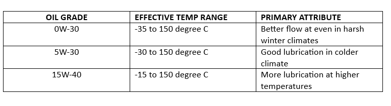

Easiest way is to Google ‘online motor claim intimation’ with name of your insurance company. You will need to upload some simple information like the policy number; registration number of the car and your registered mobile number to start with. Be ready with the driving license and date/ time /location of the accident. After intimation, make sure to note down the claim number.
If you find this tedious, just call/chat OUTDRIVE helpline on 77 7001 7001 and ask for help.
Yes, you can get the RC revised with the new color through RTO.
Ceramic coating is a cost-effective and practical solution. Graphene coating is a better and costlier coating which looks great on darker paints. PPF gives better protection than both Ceramic and Graphene but cost is absurd.
For older cars we recommend engine oil change every 6 months/ 6000 KM. For newer cars it could be every 10 months/10000 KM
If you live in extreme climates or if you drive a high-performance car, synthetic oil is better. But it costs more. Regular oil is sufficient for most common cars for everyday use.
Most reputed oil brands in the world are present in India but they sell different oil in Indian market. We therefore use only imported oil with international certifications. We have no local favorites.
We prefer 15W-40, though most OEM recommends 5W-30. Without getting into scientific jargon, table below will explain why
